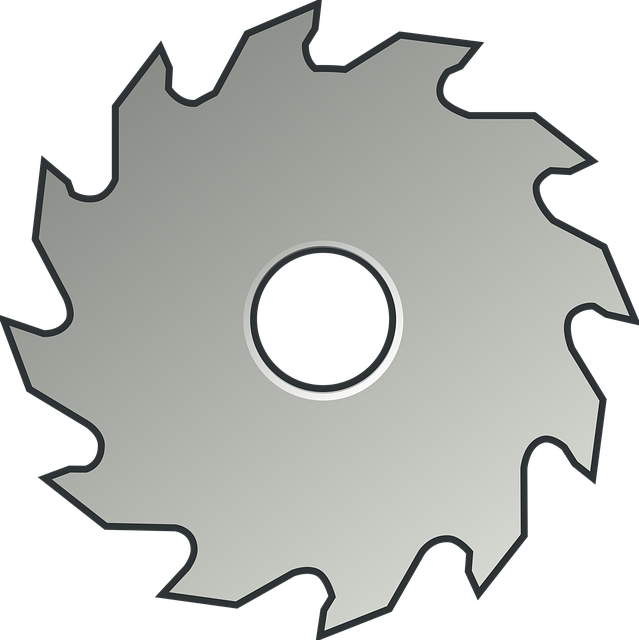

Se debe generar un archivo PDF haciendo uso de la librería jsPDF y html2canvas, sin embargo, al momento de que html2canvas genera la imagen, esta rebasa el tamaño máximo permitido de la página. Como solución, la imagen generada, es particionada en parte superior e inferior. La partición superior, es colocada en lo restante de la primera página y en la próxima página del documento, se coloca la parte inferior.
Adicional a lo anterior, los recortes a la imagen se colocan en los elementos HTML correspondientes.
HTML + Bootstrap 5.3 + JavaScript + jsPDF + html2canvas
Puedes seguirme un YT: Codeando con JC. Recuerda, Codear, codear es divertido!
Recuerda que con html2canvas, puedes generar una imagen de un div con un ID establecido, o generar uno nuevo y capturar ese DIV para convertirlo en imagen.
Las funciones están de la forma actual, con la intención de que puedan se entendibles, incluso las variables internas pueden repetirse en cada funcion.
Las funciones que generan los recortes de la imagen, se pueden reducir a solamente 1 función.
Con la función, drawImage(), se puede extraer cualquier parte de la imagen original, siempre y cuando se modifiquen los puntos establecidos en la función correspondiente.
Las imágenes pueden estar sujetas a derechos de autor.